New resources
My newest resources appear here first. The list updates automatically.
48 resources
Amoklauf – Arbeitsblatt Lückentext, Hörverstehen & Suchsel | Deutsch / German
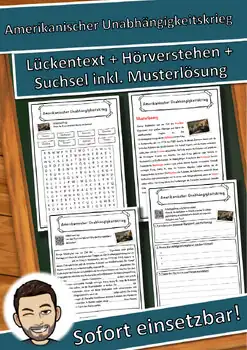
Amerikanischer Unabhängigkeitskrieg – Deutsch / German Arbeitsblatt
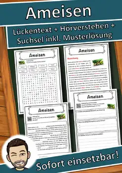
Ameisen – Arbeitsblatt Lückentext, Hörverstehen & Suchsel | Deutsch / German
Amateurfunk – Arbeitsblatt Lückentext, Hörverstehen & Suchsel | Deutsch / German
Aluminium – Arbeitsblatt Lückentext, Hörverstehen & Suchsel | Deutsch / German
Altsteinzeit – Arbeitsblatt Lückentext & Hörverstehen (Deutsch / German)
Alphabet – Arbeitsblatt Lückentext, Hörverstehen & Suchsel | Deutsch / German
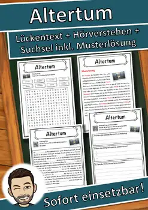
Altertum – Arbeitsblatt Lückentext, Hörverstehen & Suchsel | Deutsch / German
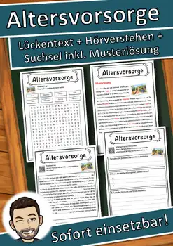
Altersvorsorge – Arbeitsblatt Lückentext & Hörverstehen (Deutsch / German)
Altenpfleger – Arbeitsblatt Lückentext & Hörverstehen (Deutsch / German)
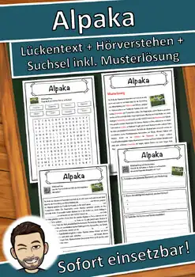
Alpaka – Arbeitsblatt Lückentext, Hörverstehen & Suchsel | Deutsch / German
Allosaurus – Arbeitsblatt Lückentext, Hörverstehen & Suchsel | Deutsch / German
Allgemeinwissen – Arbeitsblatt Lückentext & Hörverstehen (Deutsch / German)
Allerheiligen – Arbeitsblatt Lückentext & Hörverstehen (Deutsch / German)
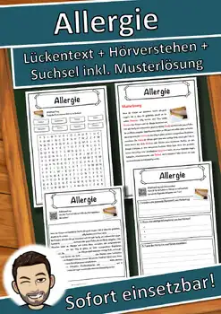
Allergie – Arbeitsblatt Lückentext, Hörverstehen & Suchsel | Deutsch / German
Allah – Arbeitsblatt Lückentext, Hörverstehen & Suchsel | Deutsch / German
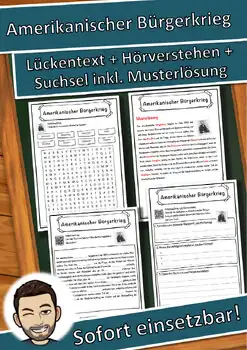
Amerikanischer Bürgerkrieg – Deutsch / German Arbeitsblatt
Alkohol – Arbeitsblatt Lückentext, Hörverstehen & Suchsel | Deutsch / German
Alice im Wunderland – Arbeitsblatt Lückentext & Hörverstehen (Deutsch / German)
Ali Baba – Arbeitsblatt Lückentext, Hörverstehen & Suchsel | Deutsch / German
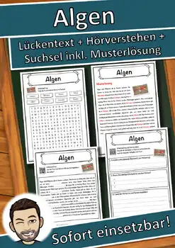
Algen – Arbeitsblatt Lückentext, Hörverstehen & Suchsel | Deutsch / German
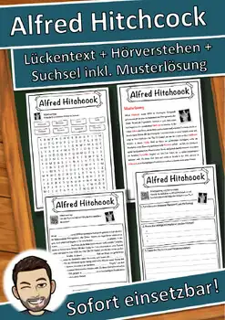
Alfred Hitchcock – Arbeitsblatt Lückentext & Hörverstehen (Deutsch / German)
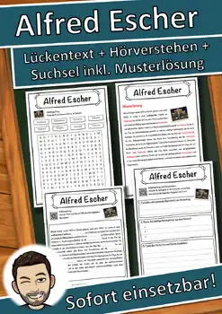
Alfred Escher – Arbeitsblatt Lückentext & Hörverstehen (Deutsch / German)
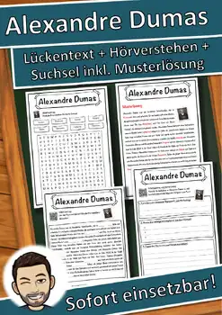
Alexandre Dumas – Arbeitsblatt Lückentext & Hörverstehen (Deutsch / German)
Alexander von Humboldt – Deutsch / German Arbeitsblatt
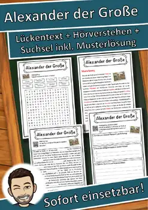
Alexander der Große – Arbeitsblatt Lückentext & Hörverstehen (Deutsch / German)
Alchemie – Arbeitsblatt Lückentext, Hörverstehen & Suchsel | Deutsch / German
Albrecht von Wallenstein – Deutsch / German Arbeitsblatt
Albrecht Dürer – Arbeitsblatt Lückentext & Hörverstehen (Deutsch / German)
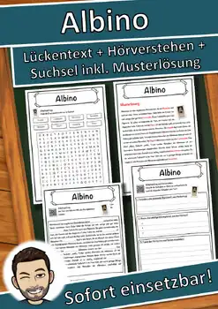
Albino – Arbeitsblatt Lückentext, Hörverstehen & Suchsel | Deutsch / German
Albert Schweitzer – Arbeitsblatt Lückentext & Hörverstehen (Deutsch / German)
Albert Einstein – Arbeitsblatt Lückentext & Hörverstehen (Deutsch / German)
Al Capone – Arbeitsblatt Lückentext, Hörverstehen & Suchsel | Deutsch / German
Aktie – Arbeitsblatt Lückentext, Hörverstehen & Suchsel | Deutsch / German
Akne – Arbeitsblatt Lückentext, Hörverstehen & Suchsel | Deutsch / German
Akkordeon – Arbeitsblatt Lückentext, Hörverstehen & Suchsel | Deutsch / German
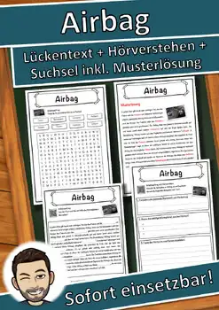
Airbag – Arbeitsblatt Lückentext, Hörverstehen & Suchsel | Deutsch / German
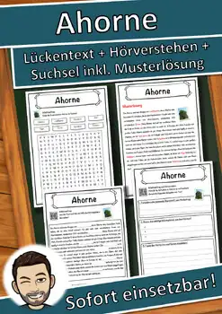
Ahorne – Arbeitsblatt Lückentext, Hörverstehen & Suchsel | Deutsch / German
Affenbrotbäume – Arbeitsblatt Lückentext & Hörverstehen (Deutsch / German)
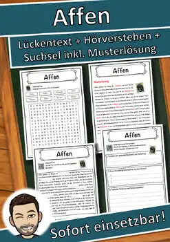
Affen – Arbeitsblatt Lückentext, Hörverstehen & Suchsel | Deutsch / German
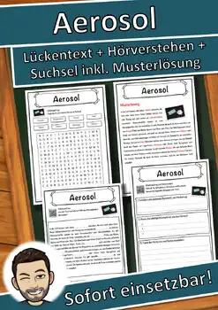
Aerosol – Arbeitsblatt Lückentext, Hörverstehen & Suchsel | Deutsch / German
Adverb – Arbeitsblatt Lückentext, Hörverstehen & Suchsel | Deutsch / German
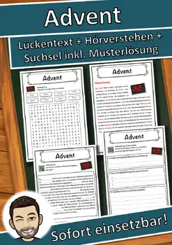
Advent – Arbeitsblatt Lückentext, Hörverstehen & Suchsel | Deutsch / German
Adoption – Arbeitsblatt Lückentext, Hörverstehen & Suchsel | Deutsch / German
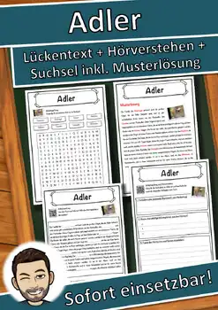
Adler – Arbeitsblatt Lückentext, Hörverstehen & Suchsel | Deutsch / German
Adel – Arbeitsblatt Lückentext, Hörverstehen & Suchsel | Deutsch / German
Adam und Eva – Arbeitsblatt Lückentext & Hörverstehen (Deutsch / German)
Ada Lovelace – Arbeitsblatt Lückentext & Hörverstehen (Deutsch / German)
No resources found – try a different search term or filter.